This chapter provides an overview of the widgets included in the UI Toolkit as standard.
The widgets comprising a scene have a tree structure with RootWidget as the root (Figure 1).
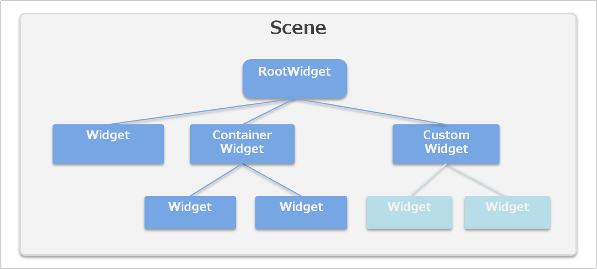Figure 1 Structure of Widgets Comprising a Scene
The Widget class is an abstract class that is the base of all widgets (UI parts).
It is possible to retrieve and set the position, size, and whether or not to display the widget (These features are common for all types of widgets).
Widget widget = new ConcreteWidget(); widget.X = 100.0f; widget.Y = 50.0f; widget.Width = 200.0f; widget.Height = 100.0f; widget.Visible = false; widget.Anchors = Anchors.Top | Anchors.Bottom | Anchors.Left | Anchors.Right;For the Anchors property, refer to the "Layout" section of "Basic Concepts".
To create a custom widget, inherit the Widget class, or derived classes such as the ContainerWidget class or Dialog class. For details, refer to Creating Custom Widgets.
This is a special widget that becomes the root of the widget tree comprising a scene.
This is created automatically when a scene is created, and it can be retrieved using the RootWidget properties of Scene. A RootWidget class instance cannot be created from an application.
To display a widget on screen, the widget must be located as the child of this root widget.
Scene scene = new Scene(); Label label = new Label(); label.SetPosition(10.0f, 50.0f); label.Text = "Hello World!"; scene.RootWidget.AddChildLast(label);The width (Width) and height (Height) of the RootWidget object matches the size of the screen buffer and cannot be changed. In addition, the position (X, Y) is fixed at (0, 0) and cannot be changed.
This widget is used to display text.
Text displays will respect newline codes in text strings, but if text will still not fit in the label width, it is possible to wrap text displays by setting the LineBreak property. The display results for each setting are shown in the following.

Figure 2 LineBreak Property of Label
If the text does not fit in the rectangle even after adding a line break, the TextTrimming property can be used to specify how to display the right edge of the last line. The display results for each setting are shown in Figure 3.
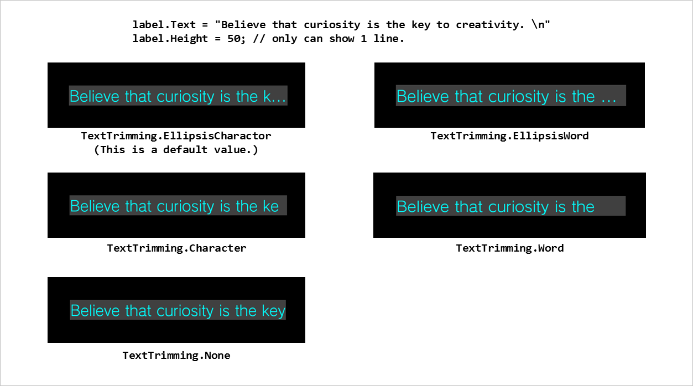Figure 3 TextTrimming Property of Label
Label label1 = new Label(); label1.SetPosition(0.0f, 0.0f); label1.SetSize(100.0f, 80.0f); label1.Font = new UIFont(FontAlias.System, 32, FontStyle.Regular); label1.TextColor = new UIColor(0, 255, 0, 255); label1.TextTrimming = TextTrimming.EllipsisCharacter; label1.LineBreak = LineBreak.Word; label1.Text = "Hello world!";
This is a widget for displaying an image.
The image is set as an object of the ImageAsset class.
ImageBox imageBox1 = new ImageBox(); imageBox1.Image = new ImageAsset("/Application/assets/img.png");You can choose the scaling method when displaying an image from the five patterns in Figure 4.

Figure 4 Image Scaling Methods
For a 9-patch image, the NinePatchMargin property can be specified to enable scaling while fixing the four corners (Figure 5).
ImageBox imageBox1 = new ImageBox(); imageBox1.Image = new ImageAsset("/Application/assets/img.png"); imageBox1.ImageScaleType = ImageScaleType.NinePatch; imageBox1.NinePatchMargin = new NinePatchMargin(24, 24, 24, 24);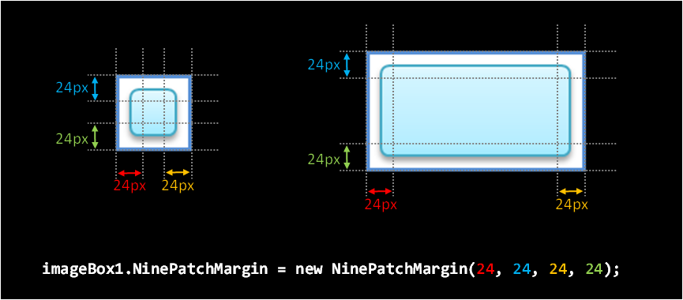Figure 5 Scaling Using the 9-patch Property of ImageBox
This is a button widget responding to touch operation.
An image or one line of text can be displayed on a Button (Figure 6).

Figure 6 Button with Displayed Text and Displayed Images
Button textButton = new Button(); textButton.Text = "OK"; Button imageButton = new Button(); imageButton.IconImage = new ImageAsset("/Application/assets/img.png");Tap this widget or press the Enter key to execute an arbitrary code.
The code executed when a button is pressed uses the ButtonAction event. Prepare an event handler that describes the code to be executed and register it to the ButtonAction event, as shown below.
Button button1 = new Button(); button1.Text = "Start"; button1.ButtonAction += HandleButton1ButtonAction;void HandleButton1ButtonAction(object sender, TouchEventArgs e) { button1.Text = "Stop"; }Note that by using the PSM Studio code template function, it is possible to create an event handler automatically simply by describing the assignment expression of the event (Figure 7).

Figure 7 Automatic Creation of Event Handler
To change the background image of a button, use the CustomButtonSettings property. It is possible to specify the background images for the normal, pressed, and disabled statuses and the 9-patch margins for each of these (Figure 8).
Button customButton = new Button(); customButton.Text = "Custom Button"; CustomImageSettings customImage = new CustomImageSettings(); customImage.BackgroundNormalImage = new ImageAsset("/Application/assets/BackgroundNormalImage.png"); customImage.BackgroundPressedImage = new ImageAsset("/Application/assets/BackgroundPressedImage.png"); customImage.BackgroundDisabledImage = new ImageAsset("/Application/assets/BackgroundDisabledImage.png"); customImage.BackgroundNinePatchMargin = new NinePatchMargin(10,10,10,10); customButton.CustomImage = customImage; customButton.Style = ButtonStyle.Custom;
Figure 8 Buttons with a Customized Background Image
This is a widget for so-called check boxes and radio buttons; it holds a boolean value (Figure 9).

Figure 9 CheckBox
Tap this widget or press the Enter key to switch the boolean value.
The boolean value can be retrieved and set with the Checked property. In addition, the Style property can be used to switch between a check box and radio button image.
CheckBox check1 = new CheckBox(); check1.Checked = true; check1.CheckedChanged += HandleCheck1CheckedChange;CheckBox radio1 = new CheckBox(); radio1.Style = CheckBoxStyle.RadioButton; radio1.CheckedChange += HandleRadio1CheckedChange;
This is a widget for adjusting numerical values (Figure 10).

Figure 10 Slider
Values can be adjusted by dragging the center knob or pressing the left-right (or up-down) keys. This value can be retrieved with the Value property. The value range can be set with the MinValue and MaxValue properties, and when the knob is at the left edge, it is at the minimum value.
The Orientation property can be used to set the slider in a vertical direction. In this case, when the knob is at the bottom, it is at the minimum value.
There are two types of events that occur when the value is changed: ValueChanged and ValueChanging. A ValueChanged event is issued after dragging the knob and releasing your finger or when the value of Value property is changed from the application code. A ValueChanging event is issued at the same time a ValueChanged event is issued and for each frame when the value is changed even while dragging the knob.
To not issue a ValueChanged or ValueChanging event temporarily, such as when setting the Value property from the application code, set the ValueChangeEventEnabled property to false.
The focus does not move with the left-right keys (up-down keys when displayed vertically), so do not place the widget in focus to the left or right of this widget.
Slider slider1 = new Slider(); slider1.Orientation = SliderOrientation.Horizontal; slider1.MinValue = -127; slider1.MaxValue = 128; slider1.ValueStep = 1; slider1.Value = 0; slider1.ValueChanged += HandleSlider1ValueChanged; slider1.ValueChanging += HandleSlider1ValueChanging;
This widget is used to display the progress level (Figure 11).

Figure 11 ProgressBar
The display styles are normal and animation, and these can be set with the Style property. The animation style is useful for a process with rather slow progress.
The progress level is set from 0 to 1 with the Progress property.
progressBar = new ProgressBar(); progressBar.Style = ProgressBarStyle.Animation;void OnUpdate() { progressBar.Progress = (float)processedItemCount / allItemCount; }
This is a widget with which a text can be displayed and edited (Figure 12).

Figure 12 EditableText
Tapping this widget or pressing the Enter key starts the standard system on-screen keyboard, enabling text input and editing.
It is possible to display default text when no text is entered, display a mask when a password is entered, and select the input mode for the on-screen keyboard.
EditableText progressBar = new EditableText(); EditableText.Text = "";
This is a widget indicating that some process is in progress (Figure 13).
Figure 13 BusyIndicator
This is not displayed by default. This is displayed by calling the Start method, and it displays an animation indicating that a process is busy. This can be hidden with the Stop method.
To have the indicator displayed after initialization, use a constructor that takes the autoStart argument when an instance is created, and set autoStart to true.
This is a widget to display a frame-advancing animated image (Figure 14).
The asset images to be used must be made into a single image by combining the individual frames. Line up the frames from the top left to the right. There are no restrictions to the number of rows or columns. The number of frames, frame width, and frame height are specified using the FrameCount, FrameWidth, and FrameHeight properties.
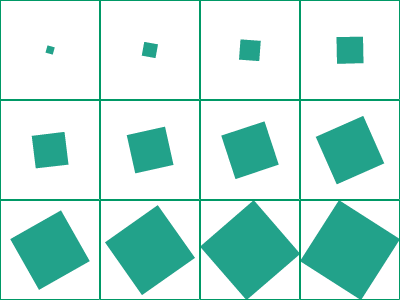Figure 14 Example of Asset Images for AnimationImageBox
Start the animation with the Start method, and stop with the Stop method. The frame display interval can be specified in milliseconds using the FrameInterval property.
PopupList is a part used for selecting an item from multiple selection options (Figure 15).

Figure 15 PopupList
Tapping PopupList or pressing the Enter key displays a dialog with a title and list. Selecting (tapping/pressing up-down and Enter key) an item on the list closes the dialog and displays the selected item on PopupList. Tapping the outside of the dialog or pressing the Back key cancels the selection and closes the dialog.
The ListItems property can be used to set the items appearing on the list. Also, the ListTitle property can be used to set the title of the Dialog.
This is a widget to select the date (Figure 16).
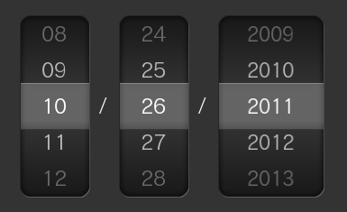Figure 16 DatePicker
Drag the item up or down or place the focus on each row and press the up-down keys to change the date.
The focus does not move with the up-down keys, so do not place the widget in focus above or below this widget.
This is a widget to select the time (Figure 17).
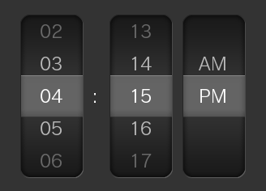Figure 17 TimePicker
It has the same operation as DatePicker.
This is a widget base class that enables adding of desired widgets.
The AddChildFirst or AddChildLast method can be used to add a widget to the start or end. An added child widget can be retrieved using the Children property. The registered child widget added last is displayed at the front.
To delete a registered child widget, use RemoveChild. To simply hide a child widget, use the Visible property.
An instance of the same widget cannot belong to multiple container widgets.
A child widget that belongs to a container widget can use an anchor. For details on anchors, refer to the UI Composer document.
This is a container widget which can store arbitrary UI parts.
This is the simplest container widget, and it can be used to specify the background color.
This panel holds a scrollable area (Figure 18).

Figure 18 ScrollPanel
It also has one Panel as a child widget; part of this section is clipped and displayed. Up/down and left/right scrolling is possible by touch operation. The scrollable direction can also be restricted.
panel1 = new ScrollPanel(); panel1.X = 300.0f; panel1.Y = 0.0f; panel1.Width = 400.0f; panel1.Height = 280.0f; panel1.PanelWidth = 400.0f; panel1.PanelHeight = 2000.0f; panel1.PanelColor = new UIColor(0.2f, 0.2f, 0.2f, 0.8f); panel1.PanelX = 10.0f; panel1.PanelY = 10.0f; panel1.ScrollBarVisibility = ScrollBarVisibility.Visible; panel1.HorizontalScroll = false; Label label1 = new Label(); panel1.AddChildLast(label1); label1.X = 310; label1.Y = 10; label1.Width = 340.0f; label1.Height = 1000.0f; label1.Text = " ... ";
This panel enables scrolling by page (Figure 19).
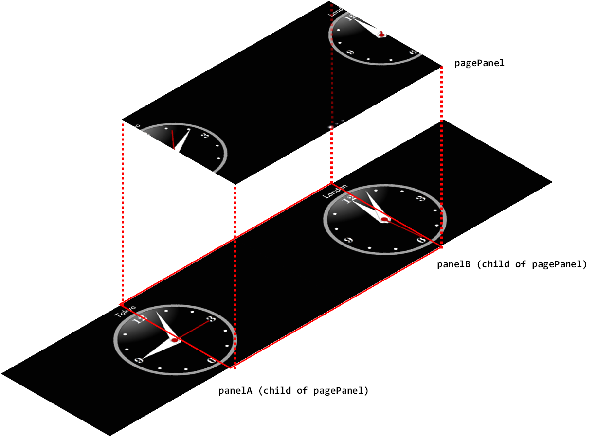Figure 19 PagePanel
PagePanel can be used to add multiple pages with the AddPageLast method, and it has a panel object for each page. The panel of the page specified with the GetPage method can be retrieved.
pagePanel = new PagePanel(); pagePanel.X = 0.0f; pagePanel.Y = 0.0f; pagePanel.Width = 800.0f; pagePanel.Height = 400.0f; MyCustomPanel panelA = new MyCustomPanel("Tokyo"); MyCustomPanel panelB = new MyCustomPanel("London"); pagePanel.AddPageLast(panelA); pagePanel.AddPageLast(panelB);
These list widgets enable vertical scrolling only. Use ListPanelItem or the derivative class to specify the content displayed for each item.
Only the quantity of ListPanelItem instances that are displayed at one time in ListPanel will be created. Items scrolled off the screen will be reused for the items to display next. Because of this, the delegate method that creates ListPanelItem objects used commonly between each item and the delegate method that updates the specialized content for each item must both be registered in ListPanel. To register, call the SetListItemCreator/SetListItemUpdate method for ListPanel.
Set the number of items and the section title string in the Sections properties for ListPanel.
When handling the selection of an item, use a SelectItemChanged event.
// data to show on the items itemTextList = new string[] { "Item 0-0", "Item 0-1", "Item 0-2", "Item 1-0", "Item 1-1" }; listPanel = new ListPanel(); // set the section titles and item counts listPanel.Sections = new ListSectionCollection { new ListSection("Section1", 3), new ListSection("Section2", 2)}; // set the creator delegate listPanel.SetListItemCreator(() => new MyListPanelItem()); // set the updater delegate listPanel.SetListItemUpdater((item) => ((MyListPanelItem)item).label.Text = itemTextList[item.Index]); listPanel.SelectItemChanged += (sender, e) => Console.WriteLine("selected index:{0}", e.Index);class MyListPanelItem : ListPanelItem { public Label label; public MyListPanelItem() { this.Height = 60; label = new Label(); this.AddChildLast(label); } }
These list widgets enable vertical or horizontal scrolling and line up items in a grid. These can be used, for example, on a picture list screen. Use ListPanelItem to specify the content displayed for each item.
Use this in the same way as ListPanel to set the delegate method for creating or updating ListPanelItem.
GridListPanel does not have sections, so the SectionIndex and IndexInSection properties of ListPanelItem are not used.
gridListPanel = new GridListPanel(); gridListPanel.SetListItemCreator(ListItemCreator); gridListPanel.SetListItemUpdater(ListItemUpdator); gridListPanel.ItemCount = 100;
A dialog is a special widget that can display a modal dialog.
These widgets enable the display of a dialog without registering it to the scene.
This is a container widget that displays a modal dialog box (Figure 20). Like the Panel, it can store arbitrary UI parts.
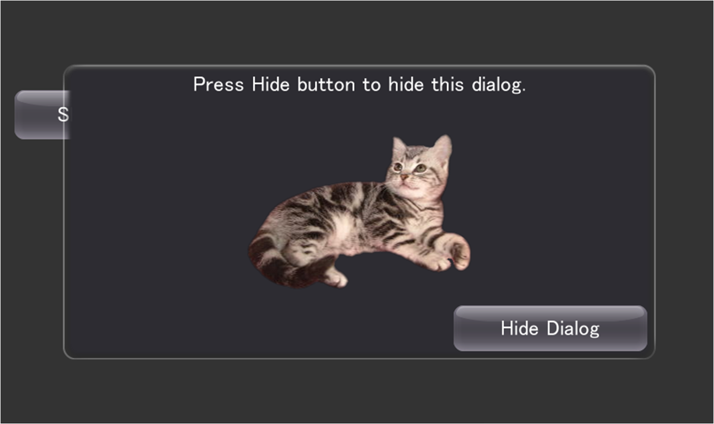Figure 20 Dialog
Pressing the Back button when a dialog is displayed closes that dialog. In addition, tapping the outside of the dialog when the HideOnTouchOutside property is set to true closes the dialog. Closing the dialog by tapping the Back button or the outside of the dialog cancels the Result property.
An animation effect (Effect) can be specified when displaying and hiding a dialog.
Dialog dialog = new Dialog(); dialog.ShowEffect = new BunjeeJumpEffect(dialog, 0.4f); dialog.HideEffect = new TiltDropEffect(); dialog.Show();
This dialog is used to display warning messages and confirmations for executing a process (Figure 21).
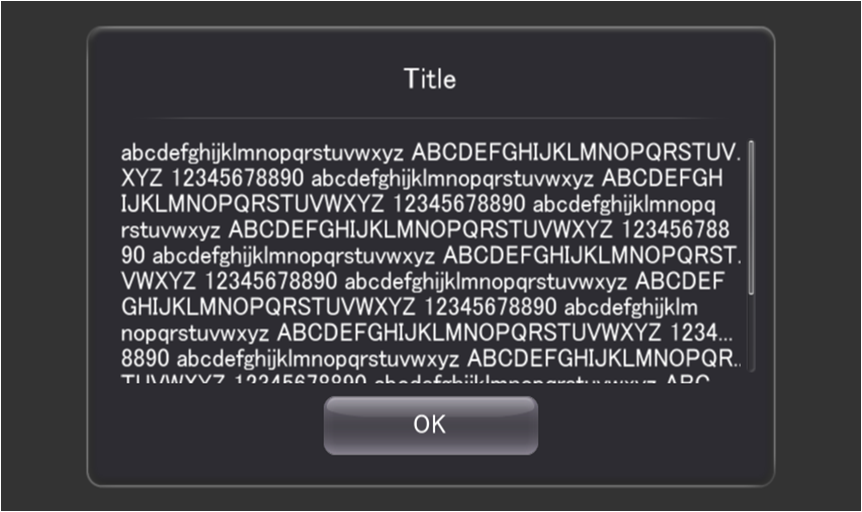Figure 21 MessageDialog
It has title text, message text, and the OK and Cancel buttons.
dialog = new MessageDialog(); dialog.Title = "Title"; dialog.Message = "This is a samle message."; dialog.Style = MessageDialogStyle.OkCancel; dialog.ButtonPressed += new EventHandler<MessageDialogButtonEventArgs>(ButtonDownHandler);
Live Widgets are special PSM widgets with various implemented interactions.
This is a list widget that makes other widgets to be scrolled with a time delay from the moment a widget item is touched (Figure 22).
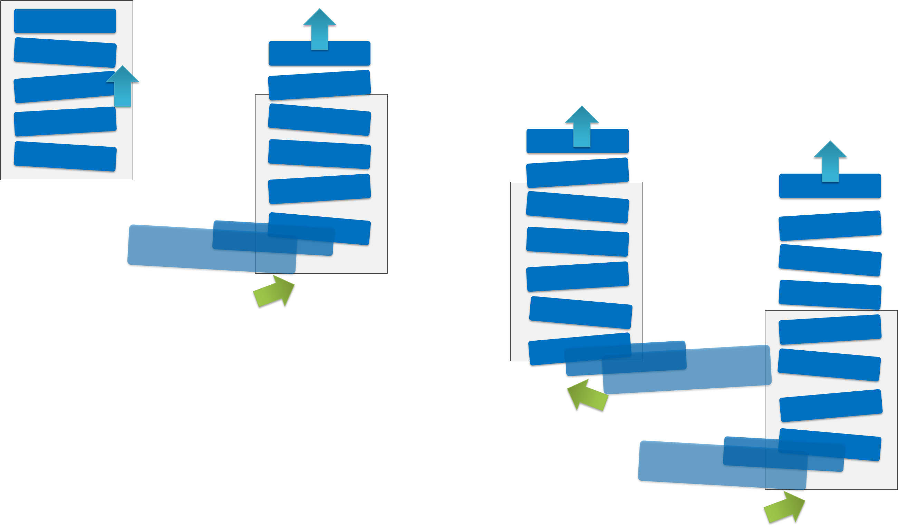Figure 22 LiveListPanel
This is a panel widget that makes a widget placed on a panel to jump to the foreground of the screen. A child widget can be jumped at an arbitrary timing - such as, when the value of the acceleration sensor changes or when a button is pressed.
This is a panel widget that rotates by a sideways flick (Figure 23). The front and back widgets can be specified.

Figure 23 LiveFlipPanel
This is a panel widget that makes panel contents to move with a distorted effect from the touched area as the starting point (Figure 24).

Figure 24 LiveScrollPanel
This is a sphere-shaped widget (Figure 25). It can be rotated by a sideways flick. It can also be used as a button since an event handler for taps is also defined for it.
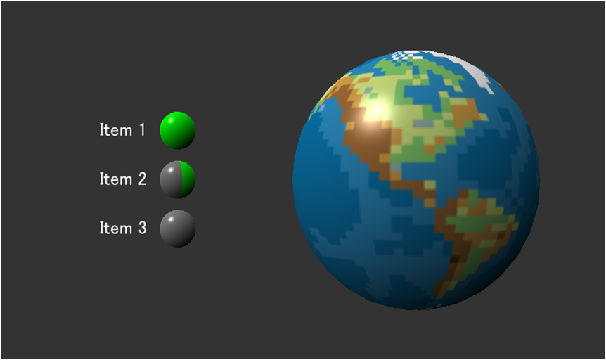Figure 25 LiveSphere
This is a panel that vibrates a child widget according to the acceleration sensor or panel movement (Figure 26).
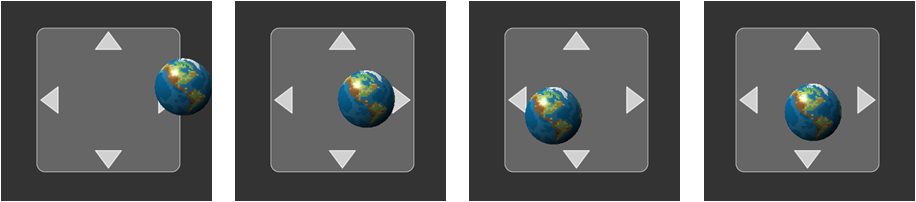Figure 26 LiveSpringPanel
The springs constant and attenuation constant can be specified per widget.
liveSpringPanel = new LiveSpringPanel(); liveSpringPanel.ReflectSensorAcceleration = true; liveSpringPanel.ReflectMotionAcceleration = true; liveSpringPanel.SetPosition(0.0f, 0.0f); liveSpringPanel.SetSize(200.0f, 200.0f); button = new Button(); liveSpringPanel.AddChildLast(button); liveSpringPanel.SetSpringConstant(button, SpringType.All, 0.5f); liveSpringPanel.SetDampingConstant(button, SpringType.All, 0.3f);